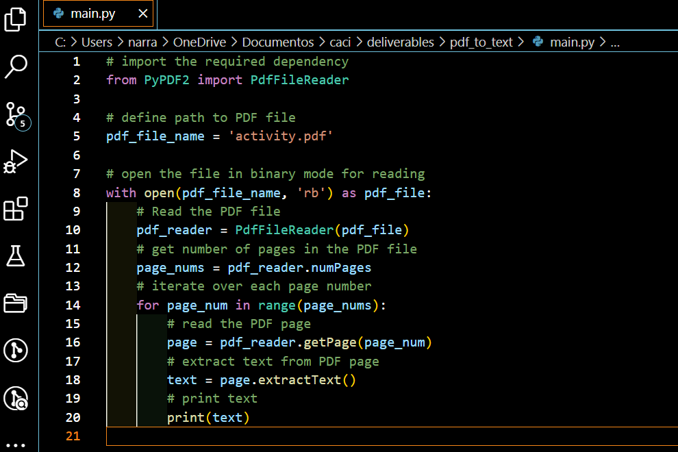
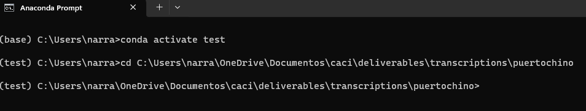
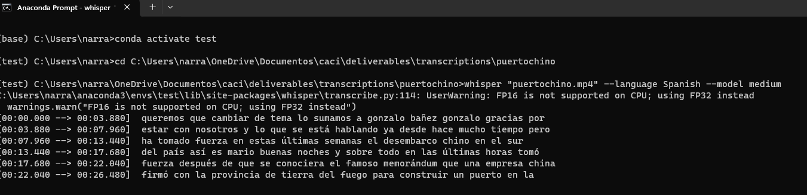
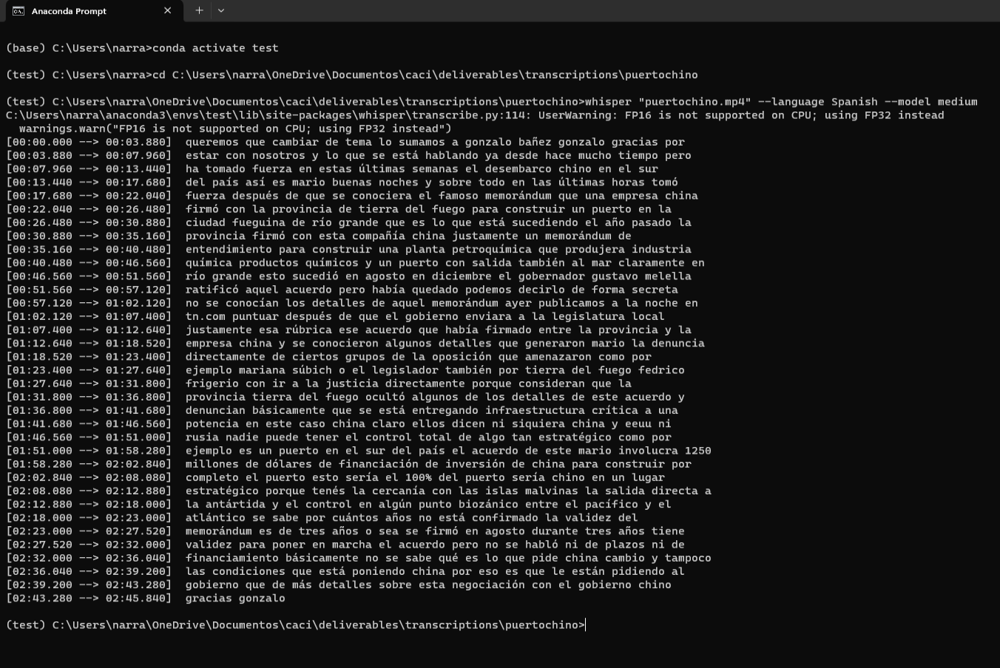

Too often, the wonderful world of web and computer programming does not enter the cosmology of academics strongly rooted in the Humanities. It seemed that the most significant computer science debate for these colleagues is the preference for a 'Mac' or 'Windows' machine.
It was during my graduate studies that I began to work with linux based operating systems without the realization that I had indeed initiated a decades long programming hobby that culminated when I submitted my Ph.D dissertation compiled using LaTex and a dated laptop running an Unbuntu OS.
Python for Applied Linguistics
PDF to text
To avoid from saving a pdf to a word document or relying on your ability to copy, paste, and format; I researched python data extraction. Here enter the name of the file on line 5. The extracted text will appear in the terminal.
Python Translate
The next step is to copy the text from your terminal into the translator.translate function,
coincidentally on line 5 and run the program. Your translation will appear in the terminal.

Leveraging and scaling programming skills, subject matter expertise, soft skills, and artificial intelligence
Frustrated with the tedious task of using tools such as oTranscribe as a platform to perform transcriptions of audio and video files for applied linguistics classes, Whisper.ai is a valuable tool that saves a significant amount of time.
The source language is detected by default, you have the option to indicate the original language as you enter the run command using Anaconda prompt to activate a local environment. If this is not enough, you can use this value to simultaneously perform a translation of the transcription.
The first step to use Whisper is to active your Anaconda prompt.
Once your environment is active, change directories using the filepath to the folder where you saved
the file you want to work with.
Now that your environment knows where to find your file, 1] type the whisper command, 2] file name.ext, 3] language option, and 4] language model.
Once your file has been located and opened, Whisper will proceed to perform the transcription and target translation if you have included a language for this parameter.
